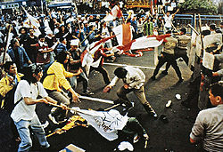
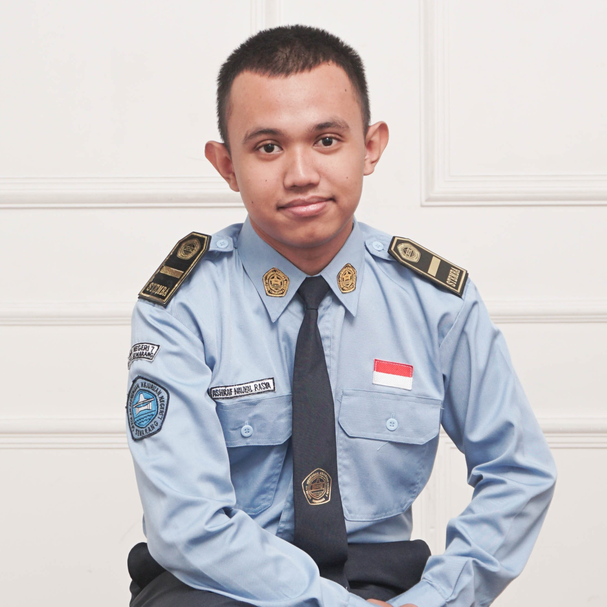
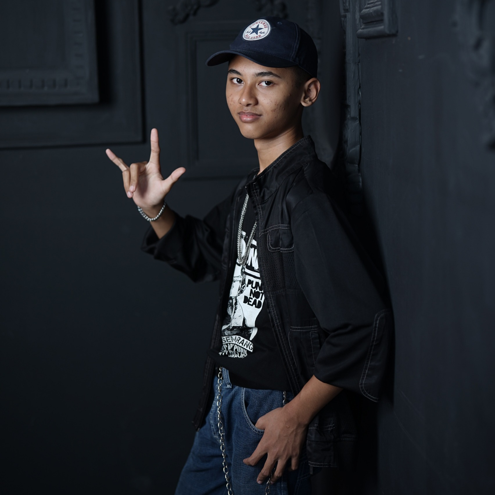
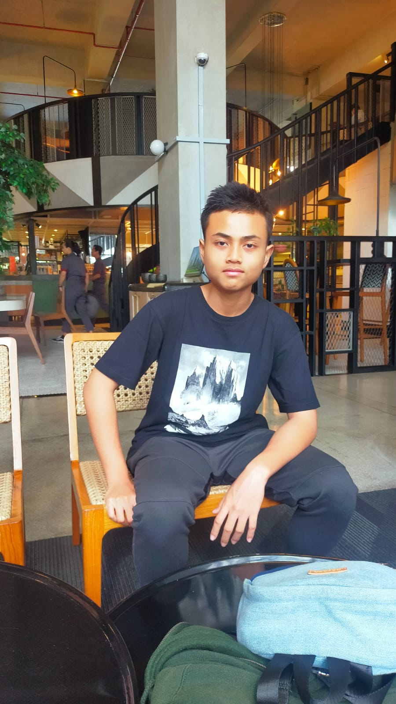

Selama 32 tahun Orde Baru berkuasa dengan tangan besi. Pada 1998, mahasiswa, rakyat, dan sejarah bersatu — memaksa perubahan yang mengubah wajah Indonesia selamanya.
Reformasi dipicu oleh akumulasi krisis multidimensi — ekonomi, politik, dan sosial yang meledak bersamaan pada 1997–1998.
Pemerintahan Soeharto dinilai otoriter, korup, kolutif, dan nepotistis. Sistem ini menutup rapat ruang kebebasan rakyat selama tiga dekade.
Krisis moneter Asia melanda Indonesia pertengahan 1997. Nilai rupiah ambruk, memicu inflasi, PHK massal, dan kelangkaan bahan pokok.
Demonstrasi mahasiswa meluas ke berbagai kota. Satu tuntutan: Reformasi Total — turunkan Soeharto, hapus KKN, amandemen UUD.
Rentetan kejadian yang mengubah wajah Indonesia dalam hitungan bulan — dari krisis ekonomi hingga lengsernya sang presiden dan lahirnya era baru.
Aparat menembak mahasiswa yang sedang berdemonstrasi secara damai. Empat nyawa melayang — menjadi titik ledak yang tak terbendung dan pemantik kerusuhan besar yang mengguncang seluruh Indonesia.

"Mereka bukan sekadar mahasiswa. Mereka adalah wajah dari jutaan rakyat yang sudah tidak tahan lagi."
Dampak reformasi sangat luas dan beragam — membawa demokrasi yang lebih terbuka sekaligus meninggalkan luka konflik horizontal di berbagai daerah.
Demokrasi reformasi berbeda secara fundamental dengan demokrasi semu ala Orde Baru — bukan sekadar prosedur, melainkan sistem yang menempatkan kedaulatan nyata di tangan rakyat.
"Kedaulatan berada di tangan rakyat dan dilaksanakan menurut Undang-Undang Dasar."Pasal 1 Ayat (2) UUD 1945 Hasil Amandemen
Berbeda dengan Orde Baru yang hanya menjalankan prosedur pemilu tanpa substansi, demokrasi reformasi mensyaratkan kebebasan nyata, persaingan terbuka, dan hasil yang tidak ditentukan sebelumnya.
Kekuasaan tidak lagi terpusat di Jakarta. Melalui otonomi daerah, rakyat di setiap kabupaten dan kota memiliki kendali nyata atas urusan lokal mereka.
Berlandaskan Pancasila dan UUD 1945 hasil amandemen — bukan demokrasi liberal tanpa batas, melainkan demokrasi yang dijaga oleh konstitusi dan lembaga-lembaga independen.
Empat kali amandemen (1999–2002) mengubah secara radikal struktur ketatanegaraan Indonesia — dari sistem presidensial super-kuat menjadi sistem yang seimbang dan demokratis.
Presiden maksimal dua periode — mengakhiri kemungkinan kekuasaan seumur hidup seperti yang terjadi di era Orde Baru selama 32 tahun.
Presiden dan wakil presiden dipilih langsung oleh rakyat dalam satu paket, menggantikan sistem pemilihan oleh MPR yang selama Orde Baru hanya bersifat formalitas.
Dewan Perwakilan Daerah dibentuk sebagai perwakilan daerah di tingkat pusat. MPR tidak lagi menjadi lembaga tertinggi negara.
Garis-Garis Besar Haluan Negara dihapus. Presiden memiliki program sendiri yang dipertanggungjawabkan langsung kepada rakyat pemilih.
Hak sipil, politik, ekonomi, sosial, dan budaya dijamin secara konstitusional. Negara wajib melindungi dan memenuhi HAM setiap warga negara.
Mahkamah Konstitusi, Komisi Yudisial, dan BPK independen dibentuk untuk memastikan tidak ada satu lembaga pun yang berkuasa tanpa pengawasan.
Tiga tonggak pemilu langsung yang mengubah cara Indonesia memilih pemimpinnya — dari legislatif, presiden, hingga kepala daerah di seluruh pelosok negeri.
Pemilu paling bebas dan beragam dalam sejarah Indonesia modern — diikuti 48 partai, jauh berbeda dari era Orde Baru yang hanya tiga partai.
Untuk pertama kalinya rakyat Indonesia memilih presiden secara langsung. SBY–JK menang atas Megawati dalam dua putaran yang demokratis.
UU No. 32/2004 menghadirkan pilkada langsung — gubernur, bupati, walikota dipilih rakyat daerahnya, bukan lagi ditunjuk DPRD.
Salah satu indikator paling jelas dari demokrasi reformasi adalah pulihnya kebebasan yang selama Orde Baru dibredel dan dibatasi.
Pemerintah tidak lagi berwenang mencabut izin atau membredel media. Pers bebas mengkritik pemerintah tanpa ancaman penutupan paksa — berbeda 180 derajat dari era Orde Baru.
Dijamin Pasal 28E ayat (3) UUD 1945. Demonstrasi dan unjuk rasa menjadi hal sah dan biasa.
Ribuan ormas, LSM, dan serikat pekerja baru lahir pasca 1998.
Ratusan portal berita online tumbuh pesat. Informasi mengalir bebas tanpa sensor pemerintah.
Siapapun dapat mendirikan partai. Dari 3 partai Orde Baru menjadi 48 peserta Pemilu 1999.
Demokrasi tidak mungkin terwujud selama militer masih berkuasa di ranah sipil dan politik. Dwifungsi ABRI harus dihapus — dan itulah yang terjadi.
Landasan hukum pemisahan TNI dan Polri secara resmi dan permanen.
TNI profesional, modern, dan tidak berbisnis di luar fungsi pertahanan negara.
Polri berada langsung di bawah presiden, bukan di bawah panglima TNI.
Anggaran dan kebijakan TNI diawasi DPR sebagai representasi rakyat.
Kekuasaan tidak lagi terpusat di Jakarta. Melalui otonomi daerah, rakyat di setiap kabupaten dan kota mendapat kendali nyata atas urusan mereka sendiri.
Pendidikan, kesehatan, pekerjaan umum, pertanian, perhubungan, dan investasi kini dikelola daerah — bukan lagi instruksi dari Jakarta.
Rakyat mengawasi langsung kepala daerah mereka. DPRD lebih berdaya untuk checks and balances terhadap bupati dan walikota.
Sistem bagi hasil antara pusat dan daerah memastikan daerah memiliki sumber daya untuk menjalankan otonominya secara nyata.
Kesenjangan antar daerah melebar, dinasti politik lokal tumbuh, dan korupsi di tingkat daerah justru lebih parah. Otonomi terus disempurnakan.
Saksikan langsung rekaman sejarah dan dokumenter tentang Reformasi 1998 — dari tragedi Trisakti, jatuhnya Soeharto, hingga perjalanan demokrasi Indonesia.
Rekaman pidato pengunduran diri Presiden Soeharto setelah 32 tahun berkuasa, menandai berakhirnya era Orde Baru dan lahirnya Reformasi.
Kisah empat mahasiswa yang gugur — Elang, Heri, Hafidin, dan Hendriawan — yang menjadi simbol perjuangan dan titik balik sejarah reformasi.
Ribuan mahasiswa dari berbagai universitas menduduki Gedung DPR/MPR Jakarta, menuntut Soeharto mundur dari jabatan presiden.
Bagaimana Indonesia bertransformasi dari rezim otoriter Orde Baru menuju sistem demokrasi yang lebih terbuka, bebas, dan berkeadilan.
Demokrasi reformasi Indonesia telah berjalan lebih dari seperempat abad (1998–2026). Perjalanan panjang ini menunjukkan kemajuan nyata — sekaligus tantangan yang belum selesai.
Gunakan hak pilihmu secara cerdas. Tolak politik uang. Kritis kepada pemerintah tapi tetap santun dan berdasar fakta.
Korupsi masih sistemik. Penguatan KPK, penyederhanaan partai, dan pemilu yang berkeadilan adalah agenda yang belum selesai.
Aktiflah dalam organisasi kemasyarakatan. Masyarakat sipil yang kuat adalah penjaga demokrasi yang paling efektif.
Jangan sia-siakan kebebasan yang diperjuangkan mahasiswa 1998 dengan darah dan air mata. Rawat demokrasi ini setiap hari.
Pendidikan politik yang masif sejak dini adalah kunci keberlanjutan demokrasi reformasi untuk generasi mendatang.
Aparat penegak hukum yang independen dan tidak berpihak adalah syarat mutlak demokrasi yang sehat dan bermartabat.
"Bangsa yang besar adalah bangsa yang mampu menjadi tuan rumah bagi perbedaan. Demokrasi bukan sekadar sistem, tetapi cara hidup yang menghargai kebebasan, persamaan, dan persaudaraan."Abdurrahman Wahid (Gus Dur) — Presiden ke-4 Republik Indonesia
"Reformasi belum selesai selama masih ada anak Indonesia yang kelaparan, bodoh, dan tidak berkeadilan. Reformasi sejati adalah perubahan di hati dan tindakan kita."Refleksi Era Reformasi Indonesia 1998–2026

(7)

(13)

(24)
Website ini disusun oleh siswa kelas XI SMKN 7 Semarang sebagai tugas mata pelajaran Sejarah Indonesia.